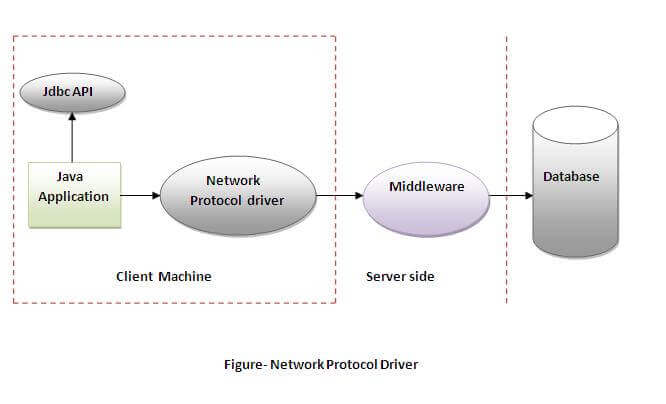

JDBC in Java
Generated on: Monday, August 04, 2025, 06:15 PM IST
Introduction to JDBC
JDBC stands for Java Database Connectivity. JDBC is a Java API to connect and execute queries with the database, and process the results. It is a part of JavaSE (Java Standard Edition). JDBC API uses JDBC drivers to connect with the database. There are four types of JDBC drivers:
- JDBC-ODBC Bridge Driver
- Native Driver
- Network Protocol Driver
- Thin Driver
We can use JDBC API to access tabular data stored in any relational database. By the help of JDBC API, we can save, update, delete, and fetch data from the database. It is like Open Database Connectivity (ODBC) provided by Microsoft.

The current version of JDBC is 4.3. It is the stable release since September 21, 2017. It is based on the X/Open SQL Call Level Interface. The java.sql package contains classes and interfaces for JDBC API. A list of popular interfaces of JDBC API are given below:
- Driver interface
- Connection interface
- Statement interface
- PreparedStatement interface
- CallableStatement interface
- ResultSet interface
- ResultSetMetaData interface
- DatabaseMetaData interface
- RowSet interface
A list of popular classes of JDBC API are given below:
- DriverManager class
- Blob class
- Clob class
- Types class
Why Should We Use JDBC?
Before JDBC, ODBC API was the database API to connect and execute queries with the database. But ODBC API uses an ODBC driver that is written in C language (i.e., platform-dependent and unsecured). That is why Java has defined its own API (JDBC API) that uses JDBC drivers (written in Java language).
We can use JDBC API to handle databases using Java programs and can perform the following activities:
- Connect to the database
- Execute queries and update statements to the database
- Retrieve the result received from the database
Do You Know?
- How to connect Java application with Oracle and MySQL database using JDBC?
- What is the difference between Statement and PreparedStatement interface?
- How to print total numbers of tables and views of a database using JDBC?
- How to store and retrieve images from Oracle database using JDBC?
- How to store and retrieve files from Oracle database using JDBC?
What is API?
JDBC also provides support for handling database metadata that allows us to retrieve information about the database, such as its tables, columns, and indexes. We can use the DatabaseMetaData interface to obtain this information that can be useful for dynamically generating SQL queries or for database schema introspection.
Another important feature of JDBC is its support for batch processing that allows us to group multiple SQL statements into a batch and execute them together. It can improve performance by reducing the number of round trips between the application and the database.
JDBC Drivers
JDBC Driver is a software component that enables Java applications to interact with the database. There are 4 types of JDBC drivers:
- JDBC-ODBC Bridge Driver - Uses ODBC driver to connect to the database. Converts JDBC method calls into ODBC function calls. Discouraged due to the thin driver.
In Java 8, the JDBC-ODBC Bridge has been removed. Oracle recommends using vendor-provided JDBC drivers.
Advantages:
- Easy to use.
- Can be easily connected to any database.
Disadvantages:
- Performance degraded because JDBC method call is converted into the ODBC function calls.
- The ODBC driver needs to be installed on the client machine.
- Native-API Driver - Uses client-side libraries of the database. Converts JDBC calls into native calls of the database API. Not entirely written in Java.

Advantage:
- Performance upgraded than JDBC-ODBC bridge driver.
Disadvantages:
- The Native driver needs to be installed on the each client machine.
- The Vendor client library needs to be installed on client machine.
- Network Protocol Driver - Uses middleware (application server) to convert JDBC calls into vendor-specific database protocols. Fully written in Java.

Advantage:
- No client side library is required because of application server that can perform many tasks like auditing, load balancing, logging etc.
Disadvantages:
- Network support is required on client machine.
- Requires database-specific coding to be done in the middle tier.
- Maintenance of Network Protocol driver becomes costly because it requires database-specific coding to be done in the middle tier.
- Thin Driver - Converts JDBC calls directly into vendor-specific database protocols. Fully written in Java, offering the best performance.

Advantage:
- Better performance than all other drivers.
- No software is required at client side or server side.
Disadvantage:
- Drivers depend on the database.
5 Steps to Connect Database in Java
There are 5 steps to connect any Java application with the database using JDBC:
- Register the Driver Class - Use
Class.forName()to load the driver dynamically. Since JDBC 4.0, this is optional if the vendor's JAR is in the classpath.
Syntax of forName() method:
public static void forName(String className) throws ClassNotFoundExceptionExample to register the OracleDriver class:
Class.forName("oracle.jdbc.driver.OracleDriver"); - Create the Connection Object - Use
DriverManager.getConnection()to establish a connection.Syntax of getConnection() method:
1) public static Connection getConnection(String url) throws SQLException
2) public static Connection getConnection(String url, String name, String password) throws SQLExceptionExample to establish connection with the Oracle database:
Connection con = DriverManager.getConnection("jdbc:oracle:thin:@localhost:1521:xe", "system", "password"); - Create the Statement Object - Use
Connection.createStatement()to create a statement.Syntax of createStatement() method:
public Statement createStatement() throws SQLExceptionExample to create the statement object:
Statement stmt = con.createStatement(); - Execute the Query - Use
Statement.executeQuery()orexecuteUpdate()to run queries.Syntax of executeQuery() method:
public ResultSet executeQuery(String sql) throws SQLExceptionExample to execute query:
ResultSet rs = stmt.executeQuery("select * from emp");
while(rs.next()) {
System.out.println(rs.getInt(1) + " " + rs.getString(2));
} - Close the Connection Object - Use
close()to release resources. Since Java 7/8, try-with-resources can automate this.Syntax of close() method:
public void close() throws SQLExceptionExample to close connection:
con.close();Note: Since Java 7/8, JDBC has the ability to use try-with-resources statement to automatically close resources of type Connection, ResultSet, and Statement.
Java Database Connectivity with Oracle
To connect a Java application with the Oracle database, follow these steps using Oracle 10g:
- Driver class:
oracle.jdbc.driver.OracleDriver - Connection URL:
jdbc:oracle:thin:@localhost:1521:xe - Username:
system - Password: User-defined during installation
Create a Table:
Example to Connect Java Application with Oracle:
class OracleCon {
public static void main(String args[]) {
try {
//step1 load the driver class
Class.forName("oracle.jdbc.driver.OracleDriver");
//step2 create the connection object
Connection con = DriverManager.getConnection("jdbc:oracle:thin:@localhost:1521:xe", "system", "oracle");
//step3 create the statement object
Statement stmt = con.createStatement();
//step4 execute query
ResultSet rs = stmt.executeQuery("select * from emp");
while(rs.next())
System.out.println(rs.getInt(1) + " " + rs.getString(2) + " " + rs.getString(3));
//step5 close the connection object
con.close();
} catch (Exception e) { System.out.println(e); }
}
}
Output: Fetches all records from the emp table.
Download Oracle JDBC Driver: You can download the Oracle JDBC driver JAR file here.
Two ways to load ojdbc14.jar:
- Paste in
jre/lib/extfolder. - Set classpath (temporary:
set classpath=c:\folder\ojdbc14.jar;.or permanent via environment variables).
Java Database Connectivity with MySQL
To connect a Java application with the MySQL database:
- Driver class:
com.mysql.jdbc.Driver - Connection URL:
jdbc:mysql://localhost:3306/sonoo(replace "sonoo" with your database name) - Username:
root - Password: User-defined during installation
Create Database and Table:
use sonoo;
create table emp(id int(10),name varchar(40),age int(3));
Example to Connect Java Application with MySQL:
class MysqlCon {
public static void main(String args[]) {
try {
Class.forName("com.mysql.jdbc.Driver");
Connection con = DriverManager.getConnection("jdbc:mysql://localhost:3306/sonoo", "root", "root");
Statement stmt = con.createStatement();
ResultSet rs = stmt.executeQuery("select * from emp");
while(rs.next())
System.out.println(rs.getInt(1) + " " + rs.getString(2) + " " + rs.getString(3));
con.close();
} catch (Exception e) { System.out.println(e); }
}
}
Output: Fetches all records from the emp table.
Download MySQL JDBC Driver: You can download the MySQL JDBC driver JAR file here.
Two ways to load mysql-connector.jar:
- Paste in
jre/lib/extfolder. - Set classpath (temporary:
set classpath=c:\folder\mysql-connector-java-5.0.8-bin.jar;.or permanent via environment variables).
Connectivity with Access without DSN
Accessing a Microsoft Access database without a Data Source Name (DSN) uses a DSN-less connection with the UCanAccess JDBC driver.
- Driver Specification: UCanAccess JDBC driver.
- Database Path: Direct file path to .mdb or .accdb.
- Dependencies: ucanaccess.jar, commons-lang.jar, etc.
Example of DSN-less Connection:
public class AccessDatabaseConnection {
public static void main(String[] args) {
String dbFilePath = "C:/databases/example.accdb";
String jdbcURL = "jdbc:ucanaccess://" + dbFilePath;
try (Connection connection = DriverManager.getConnection(jdbcURL)) {
System.out.println("Connection established successfully.");
Statement statement = connection.createStatement();
ResultSet resultSet = statement.executeQuery("SELECT ID, Name FROM Employees");
System.out.println("Employee Details:");
while (resultSet.next()) {
System.out.println("ID: " + resultSet.getInt("ID"));
System.out.println("Name: " + resultSet.getString("Name"));
}
} catch (Exception e) { e.printStackTrace(); }
}
}
Output:
Connection established successfully.Employee Details:
Steps to Set Up: Download UCanAccess, add dependencies, prepare the database, and run the program.
DriverManager Class
The DriverManager class, part of java.sql, acts as an interface between users and drivers. It manages available drivers and establishes connections.
Methods:
| Method | Description |
|---|---|
| public static synchronized void registerDriver(Driver driver) | Is used to register the given driver with DriverManager. No action is performed when the given driver is already registered. |
| public static synchronized void deregisterDriver(Driver driver) | Is used to deregister the given driver with DriverManager. If the given driver has been removed from the list, then no action is performed. |
| public static Connection getConnection(String url) throws SQLException | Is used to establish the connection with the specified url. The SQLException is thrown when the corresponding Driver class is not registered. |
| public static Connection getConnection(String url, String userName, String password) throws SQLException | Is used to establish the connection with the specified url, username, and password. The SQLException is thrown when the corresponding Driver class is not registered. |
| public static Driver getDriver(String url) | Those drivers that understand the mentioned URL are returned by this method provided those drivers are mentioned in the list of registered drivers. |
| public static int getLoginTimeout() | The duration of time a driver is allowed to wait to establish a connection with the database is returned by this method. |
| public static void setLoginTimeout(int sec) | The method provides the time in seconds. If 0 is passed, the driver will wait infinitely while trying to establish the connection. |
| public static Connection getConnection(String URL, Properties prop) throws SQLException | A connection object is returned after creating a connection to the database at the mentioned URL, fetching authentication details. |
ResultSet Interface
The ResultSet object maintains a cursor pointing to a table row. By default, it moves forward only and is not updatable.
Commonly Used Methods:
| Method | Description |
|---|---|
| public boolean next() | Is used to move the cursor to the one row next from the current position. |
| public boolean previous() | Is used to move the cursor to the one row previous from the current position. |
| public boolean first() | Is used to move the cursor to the first row in result set object. |
| public boolean last() | Is used to move the cursor to the last row in result set object. |
| public boolean absolute(int row) | Is used to move the cursor to the specified row number in the ResultSet object. |
| public boolean relative(int row) | Is used to move the cursor to the relative row number in the ResultSet object, it may be positive or negative. |
| public int getInt(int columnIndex) | Is used to return the data of specified column index of the current row as int. |
| public int getInt(String columnName) | Is used to return the data of specified column name of the current row as int. |
| public String getString(int columnIndex) | Is used to return the data of specified column index of the current row as String. |
| public String getString(String columnName) | Is used to return the data of specified column name of the current row as String. |
ResultSetMetaData Interface
The ResultSetMetaData interface provides metadata about a table, such as column count and names.
Commonly Used Methods:
| Method | Description |
|---|---|
| public int getColumnCount() throws SQLException | It returns the total number of columns in the ResultSet object. |
| public String getColumnName(int index) throws SQLException | It returns the column name of the specified column index. |
| public String getColumnTypeName(int index) throws SQLException | It returns the column type name for the specified index. |
| public String getTableName(int index) throws SQLException | It returns the table name for the specified column index. |
JDBC Architecture
JDBC architecture consists of:
- JDBC API: Interfaces and classes in
java.sqlandjavax.sql. - JDBC Driver Manager: Manages loading of database drivers.
- JDBC Driver: Vendor-specific implementation for database connectivity.
- Database: The target relational database.

What Are the Problems?
While JDBC is a powerful API for database connectivity, it comes with certain challenges that developers may encounter:
- Performance Overhead: Manual resource management (e.g., closing connections) can lead to performance issues if not handled properly.
- SQL Injection Risk: Using
Statementinstead ofPreparedStatementcan expose applications to SQL injection attacks. - Driver Compatibility: Incompatible or outdated JDBC drivers can cause connection failures or unexpected behavior.
- Complexity in Large Applications: Managing transactions and handling exceptions becomes complex in large-scale applications without frameworks like Hibernate or Spring JDBC.
- Lack of Built-in Connection Pooling: JDBC does not provide connection pooling natively, requiring external libraries or manual implementation.
Key Interfaces
DriverManager: Manages a set of JDBC drivers.Connection: Represents a session with the database.Statement: Used to execute SQL queries.ResultSet: Holds data retrieved from a query.
Best Practices
- Use prepared statements to prevent SQL injection.
- Always close connections, statements, and result sets in a
finallyblock or try-with-resources. - Handle exceptions appropriately.
- Use connection pooling for better performance in production.
Important Notes
- JDBC is part of the JDK, but a database-specific driver is required.
- Supports multiple databases via different drivers.
- Transaction management is available via
Connectionmethods likesetAutoCommit()andcommit().
Example: JDBC with MySQL (Detailed)
This example connects to a MySQL database, creates a table, inserts data, and retrieves it. (Note: Requires MySQL JDBC driver and a running MySQL server with a database named "school" and user "root" with password "password".)
public class JdbcExample {
public static void main(String[] args) {
String url = "jdbc:mysql://localhost:3306/school";
String user = "root";
String password = "password";
try {
Class.forName("com.mysql.cj.jdbc.Driver");
Connection conn = DriverManager.getConnection(url, user, password);
Statement stmt = conn.createStatement();
String createTable = "CREATE TABLE IF NOT EXISTS students (
id INT AUTO_INCREMENT PRIMARY KEY,
name VARCHAR(50),
grade INT
)";
stmt.executeUpdate(createTable);
String insertData = "INSERT INTO students (name, grade) VALUES
('Alice', 85), ('Bob', 92), ('Charlie', 78)";
stmt.executeUpdate(insertData);
String query = "SELECT * FROM students";
ResultSet rs = stmt.executeQuery(query);
System.out.println("Student Records:");
while (rs.next()) {
int id = rs.getInt("id");
String name = rs.getString("name");
int grade = rs.getInt("grade");
System.out.println("ID: " + id + ", Name: " + name + ", Grade: " + grade);
}
rs.close();
stmt.close();
conn.close();
} catch (ClassNotFoundException e) {
System.out.println("Driver not found: " + e.getMessage());
} catch (SQLException e) {
System.out.println("SQL Error: " + e.getMessage());
}
}
}
Output:
ID: 1, Name: Alice, Grade: 85
ID: 2, Name: Bob, Grade: 92
ID: 3, Name: Charlie, Grade: 78